Step 1:
Refer to the circuit diagram of differential amplifier in Figure P8.2 in the textbook.
From the figure, the bias current  is 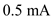.Drain resistance.
is 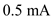.Drain resistance.
Current source output resistance is .
Write the formula for overdrive voltage.
Substitute for and for  .
.
Thus, overdrive voltage  is 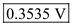.
is 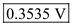.
Step 2:
Write the formula for trans-conductance .
.
Thus, trans-conductance  is .
is .
Step 3:
Write the formula for differential gain of the differential amplifier.
Substitute 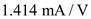 for  and 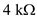 for
and 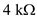 for  .
.

Thus, differential gain of the amplifier is 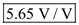.
Step 4:
Write the expression for common mode gain .
The drain resistance are known to have a mismatch of 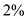.
Thus, common mode gain is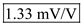.
Step 5:
Write the formula for common mode rejection ratio.
Substitute 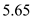 for and for  in the equation.
in the equation.
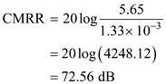
Thus, common mode rejection ration CMRR is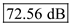.